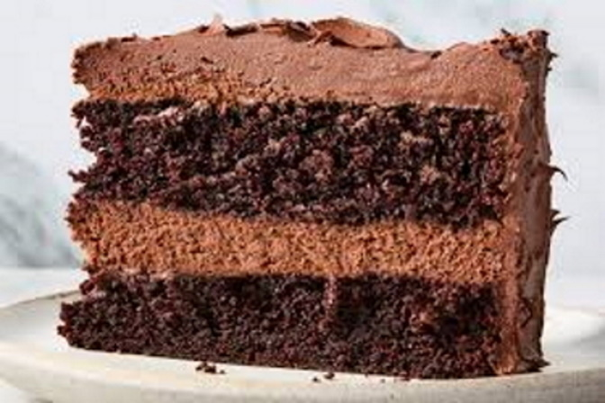
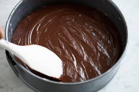

Tempt your taste buds with this delicious Chocolate Cake!!!

Chocolate cake"
or chocolate gâteau (from French: gâteau au chocolat) is a cake flavored
with melted chocolate, cocoa powder, or both. It can also have other ingredients such as
fudge,
vanilla creme, and other sweeteners.
This homemade chocolate cake recipe is super
easy to prepare in one bowl for a
deliciously
moist and fluffy chocolate cake. This is the
best chocolate cake I have ever had! Frost
with your favorite frosting.It truly couldn't be
easier to make this chocolate cake — just combine
the
ingredients in a mixing bowl and bake!
- Mix the dry ingredients in a large bowl.
- Mix in the eggs, vanilla, and oil on medium speed. Stir in the boiling water.
- Pour the batter into prepared pans. Bake until a toothpick comes out clean

Ingredients
- 2 cups white sugar
- 1 ¾ cups all-purpose flour
- ¾ cup unsweetened cocoa powder
- ½ teaspoons baking powder
- 1 ½ teaspoons baking soda
- 1 teaspoon salt
- 2 large eggs
- 1 cup milk
- ½ cup vegetable oil
- 2 teaspoons vanilla extract
- 1 cup boiling water
Directions
Step1
Gather all ingredients. Preheat the oven to 350 degrees F (175 degrees C).
Grease and flour two
9-inch round baking pans.
Credit: Morgan Glaze /Food Stylist: Emily Nabors Hall / Prop Stylist: Pricilla Montiel
Step2
Stir sugar, flour, cocoa, baking powder, baking soda, and salt together in a large bowl.

Credit: Morgan Glaze /Food Stylist: Emily Nabors Hall / Prop Stylist: Pricilla Montiel
Step3
Add eggs, milk, oil and vanilla; mix for 2 minutes on medium speed with an electric mixer.

Step4
Stir in the boiling water. The batter will be thin. Pour evenly into the prepared pan.
Step5
Bake in the preheated oven until a toothpick inserted into the center comes out clean,
about 30
to 35 minutes.Cool in the pans for 10 minutes, then transfer to a wire rack to
cool completely.

| Nutritional Facts | |||
|---|---|---|---|
| Calories | Fat | Carbs | Protien |
| 160 | 10g | 30g | 6g |